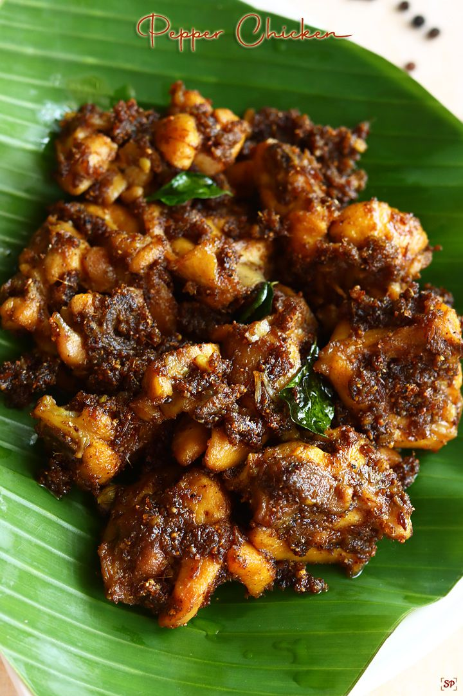

Pepper chicken
Home

Pepper chicken curry, more commonly known as pepper chicken masala, is a poultry dish that is native to South Indian Cuisine.
It is spicy, flavourful, and aromatic thanks to the freshly ground spice mix that is often used.
Unlike most other South Indian, the heat comes from the freshly ground black peppercorns rather than red chilli peppers.
Ingredients
- Chicken Tomato
- Onion
- Tomato
- Ginger garlic paste
- Peppercorn
- Cumin seeds
- Coriander seeds
- Cinnamon
- Cardamom
- Cloves
Prepartion
- Roast the spice mix until the peppercorn starts to splutter.
- Let the spice mix cool.
- Grind the roasted spices into a coarse powder.
- Add the onions and grind into a fine paste.
- In a pan, sauté the onions until translucent
- Add the ginger garlic paste and sauté until the raw smell disappears.
- Add the ground spice paste and sauté well.
- Add the chopped tomatoes and curry leaves.
- You can also add turmeric powder and salt to taste.